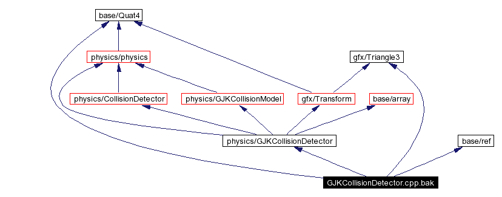

Main Page Namespace List Class Hierarchy Alphabetical List Compound List File List Namespace Members Compound Members File Members Related Pages
/home/jungd/unix/dev/OpenSim/opensim/physics/GJKCollisionDetector.cpp.bak File Reference
#include <physics/GJKCollisionDetector>
#include <gfx/Triangle3>
#include <base/ref>
#include <base/Quat4>
Include dependency graph for GJKCollisionDetector.cpp.bak:

Go to the source code of this file.
Generated on Thu Aug 29 16:52:02 2002 for OpenSim by
 1.2.14 written by Dimitri van Heesch,
© 1997-2002
1.2.14 written by Dimitri van Heesch,
© 1997-2002